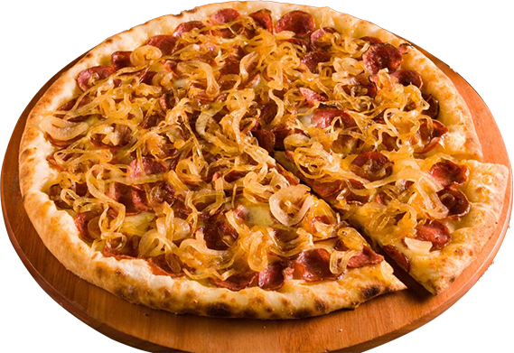
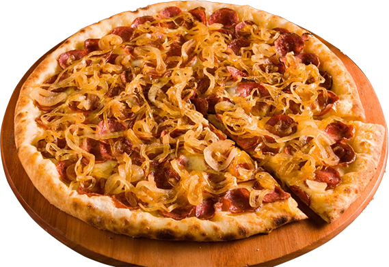

Pizza DahoraPizza Dahora
Pizza DahoraPizza Dahora


 

A história da pizza tem início há pelo menos seis mil anos atrás, provavelmente entre os egípcios e os hebreus. Ela não era, é claro, como é conhecida hoje, mas apenas um delgado estrato de massa –
Av. de Cillo, 341 - Vila Pavan, Americana - SP,
13465-100
(19) 9999-9999
pizzadahora@gmail.com